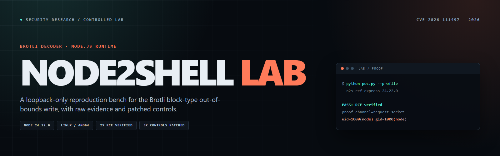
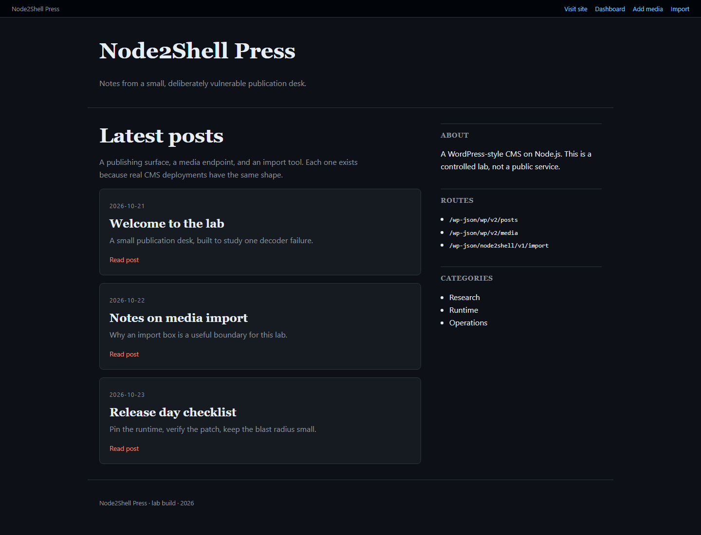

WordPress-style CMS
A server-rendered blog, dashboard, JSON media route, and import-by-URL tool. The media route uses default express.json().
RCE 2/2 · DoS 2/2 · lab notes

CVE-2026-111497 · research lab
A reproducible, loopback-only test bench for the Brotli decoder out-of-bounds write in affected Node.js releases. Fresh containers, raw logs, fixed proof commands, and a clear line between a crash and a profile-specific command execution.
The bench
Each lab puts the malformed stream behind a different ordinary feature. The tests use only the published network interface.
A server-rendered blog, dashboard, JSON media route, and import-by-URL tool. The media route uses default express.json().
RCE 2/2 · DoS 2/2 · lab notes
An OG scraper on undici 8.12.3. It fetches a URL and consumes the whole response, which reaches the decoder.
DoS 2/2 · RCE not claimed · lab notes
The minimal fixture that preserves the exact-binary RCE profile: one parser, one worker, one supervisor, one fixed proof.
RCE 2/2 · DoS 2/2 · lab notes
Proof, not mockups

PASS: RCE verified by fresh id output profile=n2s-wp-24.22.0-x86_64 proof_channel=HTTP request socket stdout proof_command=id proof_stdout=uid=1000(node) gid=1000(node) groups=1000(node) successful_attempt=1
The proof must contain complete uid= and gid= output from a fresh process. A callback token is not used here.
Evidence
| Claim | Runs | Result | Raw log |
|---|---|---|---|
| Reference Express RCE | 2/2 | PASS | run 1 · run 2 |
| CMS RCE | 2/2 | PASS | run 1 · run 2 |
| CMS DoS | 2/2 | PASS | run 1 · run 2 |
| Unfurl DoS | 2/2 | PASS | run 1 · run 2 |
| Patched controls | 3/3 | FAIL CLOSED | matrix · hashes |
The RCE result is exact-profile and probabilistic. It depends on the pinned binary, package lock, one libuv worker, file descriptor 19, and a fresh ASLR layout. It is not a general claim about Node.js.
Run it locally
make lab-a make poc-a make clean
Docker must be running and port 3000 free. The check expects four consecutive failed health probes.
make lab-ref make poc-ref make clean
The supervisor restarts the worker after a missed ASLR guess. The PoC tries at most 16 fresh processes.